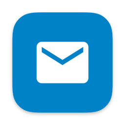
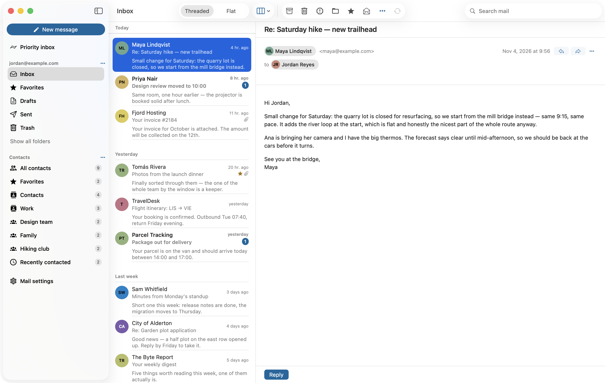

NC Mail
A native macOS mail client for your Nextcloud.
Download for macOSNot notarized yet: on first launch, right-click the app and choose Open.

- Local firstYour mail is mirrored to a database on your Mac. Read, search and triage offline; changes sync back to your own Nextcloud server.
- Contacts integrationYour Nextcloud address books, right in the app.
- Nextcloud Assistant integrationUse your server's Assistant directly from your mail.
- Feature parity with Nextcloud MailThe goal is everything the Nextcloud Mail web app does, as a native Mac app.